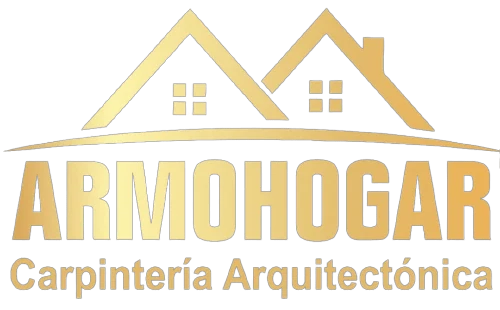
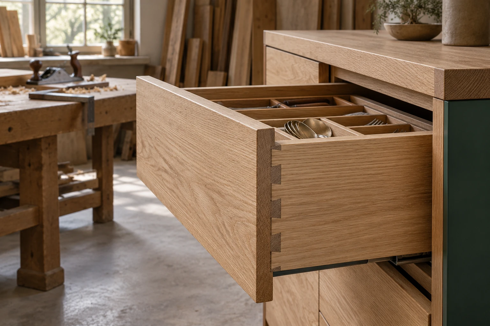
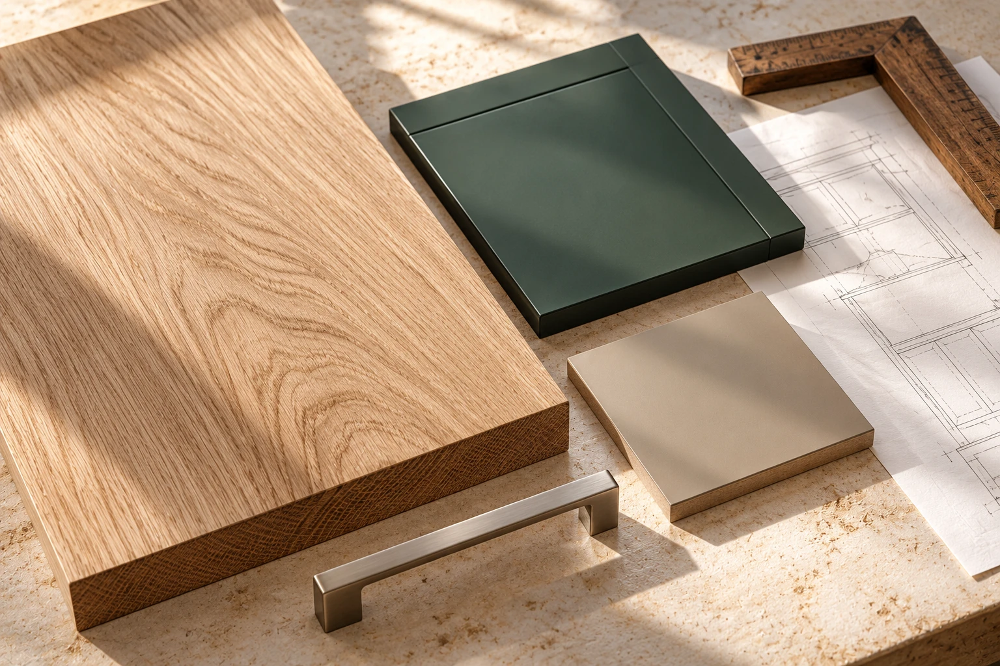
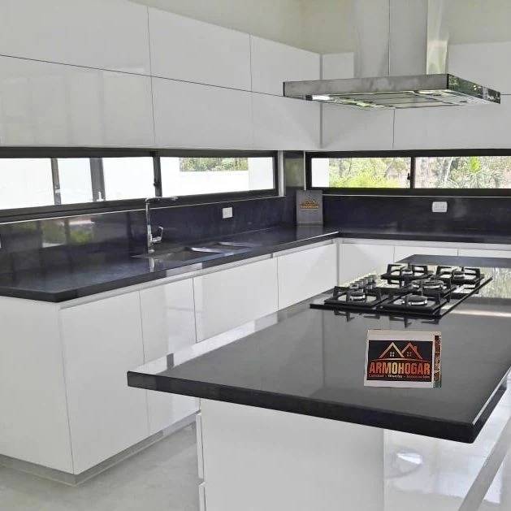

Entender.
El espacio, lo que guardas y la manera en que lo usas. Ahí comienza el diseño.

Diseña tu solicitud ↗Un mueble a medida empieza
mucho antes de instalarlo.

Explora un módulo ilustrativo.
Cada parte responde a una decisión.
La estructura organiza el interior y define cómo aprovechas cada centímetro.
Una paleta para empezar a conversar.
Acabados ilustrativos, sujetos a disponibilidad.

El espacio, lo que guardas y la manera en que lo usas. Ahí comienza el diseño.
Revisar medidas, materiales y alcance antes de fabricar la propuesta acordada.
Coordinar instalación, comprobar detalles y acompañar la entrega del mobiliario.

Conoce los ambientes que Armohogar presenta en sus canales oficiales.
Ver su trabajo ↗Elige el ambiente y prepara tu solicitud.
El equipo revisará contigo el alcance.